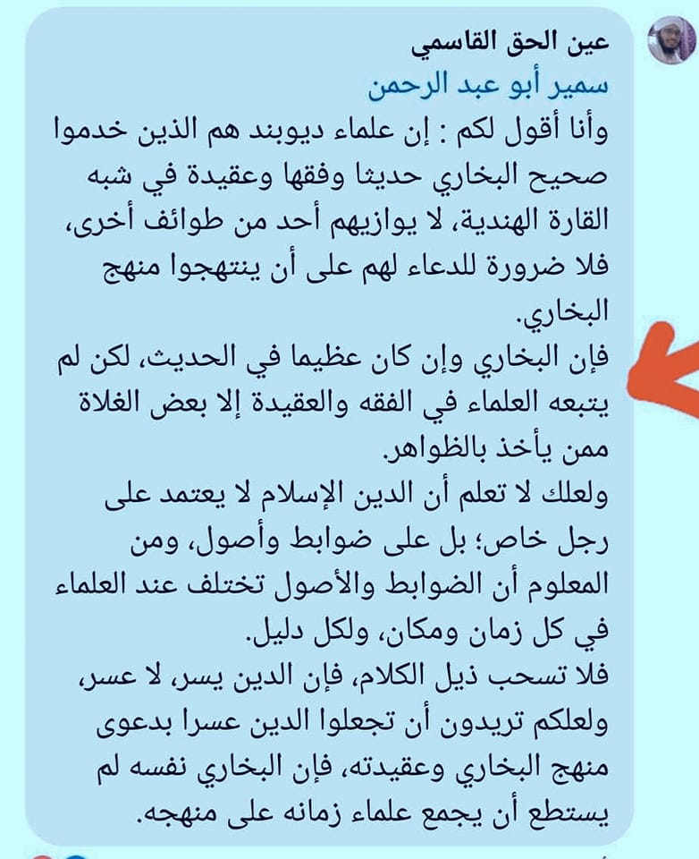

‘গুলাত আহলে জাহির লোকজন ছাড়া কেউ ইমাম বুখারির আকিদাহ অনুসরণ করে না।’
২৮ মে, ২০২৩
‘গুলাত আহলে জাহির লোকজন ছাড়া কেউ ইমাম বুখারির আকিদাহ অনুসরণ করে না।’
তাহলে এতোদিন ইনারা যে ইমাম বুখারি রাহ. থেকে তাওয়িল ওগায়রা প্রমাণের অপচেষ্টা করলেন? (যদিও ইমাম বুখারি থেকে তাওয়িলের অকাট্য প্রমাণ নেই।) ব্যর্থ হয়ে এখন ইমাম বুখারিকেই আহলেসুন্নাহ থেকে বের করে দেয়ার ক্ষুদ্র প্রচেষ্টায় কালামি বড়ভাইদের একজন।
‘ইমাম বুখারি তার সমসাময়িক আলেমদেরকে তাঁর মানহাজ কবুল করাতে পারেন নাই’— আকিদাহ বাতিল হওয়ার এক অকাট্য দলিল এটি।
আচ্ছা, ইমাম আবু হানিফা রাহ. কি তাঁর সমসাময়িক সকল আলেমকে তাঁর মাজহাব কবুল করাতে পেরেছিলেন? যদি না পারেন, তবে কি হানাফি মাজহাব বাতিল বলে গণ্য হবে?
